Learn how MLflow simplifies experiment tracking, model versioning, and deployment for efficient machine learning development.
MLOps
MLflow
Author
Sagar Thacker
Published
May 28, 2023
Welcome to our latest blog post, where we delve into the fascinating world of experiment tracking and its powerful implementation using MLflow. 📚 We’ll explore the concept of experiment tracking and learn how MLflow can revolutionize the way we track and manage our machine learning experiments.
In this comprehensive guide, we will walk you through the process of leveraging MLflow to effectively track your experiments, enabling you to gain valuable insights into model performance, parameter tuning, and results. Discover how MLflow’s model registry feature empowers you to version your models, ensuring reproducibility and seamless collaboration.
What is Experiment Tracking?
In a nutshell, it is the process of building an ML model. More formally, Experiment tracking is the process of keeping track of all the relevant information from an ML experiment, which includes:
Source code
Environment
Data
Model
Hyperparameters
Metrics
Terminologies associated with ML Experiments:
Experiment Run: Each trail while building an ML model is called an experiment run. Whether it’s training a vanilla Linear Regression model or conducting hyperparameter tuning with various combinations, each distinct attempt is considered an experiment run. It allows for systematic organization and analysis of different approaches and variations.
Run Artifact: Any file that is associated with an ML run is an Artifact. Example: Model weights, Model predictions, Model metrics, etc.
Experiment Metadata: Additional information such as Model Signature - description of a model’s inputs and outputs, Model Input Example - example of a valid model input.
Why is Experiment Tracking Important?
Reproducibility: It is important to be able to reproduce the results of an experiment. This is especially true in the case of ML experiments where the results are not deterministic. Experiment tracking helps us to reproduce the results of an experiment by keeping track of all the relevant information.
Organization: Any file associated with an ML run is considered an artifact. These artifacts can include crucial components such as model weights, model predictions, model metrics, or any other files generated during the experiment. They serve as valuable resources for evaluating and understanding the outcomes of each run.
Optimization: In addition to the core elements of an ML experiment, there is additional metadata that provides valuable context and insights. This metadata includes the model signature, which describes the inputs and outputs of the model, and the model input example, which provides an example of a valid input for the model. These details contribute to a comprehensive understanding of the experiment and aid in reproducibility.
In the past, before the advent of dedicated experiment tracking tools, researchers and data scientists relied on spreadsheets to keep track of their experiments. However, this manual approach presented several challenges and limitations. Let’s explore the major points of concern:
Error Prone: The process of manually copying and pasting the results of an experiment from a Jupyter notebook or other sources into a spreadsheet was tedious and error-prone. It often led to mistakes or inaccuracies in recording the data, undermining the reliability and integrity of the experiment records.
No standard format: Without a standardized format for organizing and documenting experiment results, researchers faced difficulties in comparing and analyzing the outcomes of different experiments. The lack of consistency hindered the ability to draw meaningful insights and make informed decisions based on the collected data.
Visibility & Collaboration: Sharing experiment results with other team members was a cumbersome task. Spreadsheet-based tracking offered limited visibility and collaboration capabilities, impeding effective teamwork and knowledge sharing. It was challenging to provide access, gather feedback, or collaborate on an experiment in a seamless manner.
Getting Started with MLflow
MLflow is an open-source platform for managing the end-to-end machine learning lifecycle. It provides a comprehensive set of tools for tracking experiments, packaging ML code, and deploying models. MLflow is designed to work with any ML library and language, and it is built on an open API, enabling seamless integration with other platforms and tools.
To see MLflow in action, let’s walk through a simple example of training a Linear Regression model on NY Green Taxi Trips dataset. We will use MLflow to track the experiment and record the results.
Install MLflow and Setup Environment
Create a new virtual environment and install MLflow and other libraries using the following command:
# Create data directorymkdir data# Move to data directorycd data# Download datasetwget https://d37ci6vzurychx.cloudfront.net/trip-data/green_tripdata_2022-01.parquet # January 2022wget https://d37ci6vzurychx.cloudfront.net/trip-data/green_tripdata_2022-02.parquet # February 2022wget https://d37ci6vzurychx.cloudfront.net/trip-data/green_tripdata_2022-03.parquet # March 2022
We’ll also create a jupyter notebook named mlflow.ipynb to run our experiment. After following the above steps, you should have the following directory structure:
To see MLflow UI in action, we’ll run the following command while you’re in the root directory in the terminal:
mlflow ui
This will start the MLflow server on port 5000. You can access the MLflow UI at http://127.0.0.1:5000. Shown below:
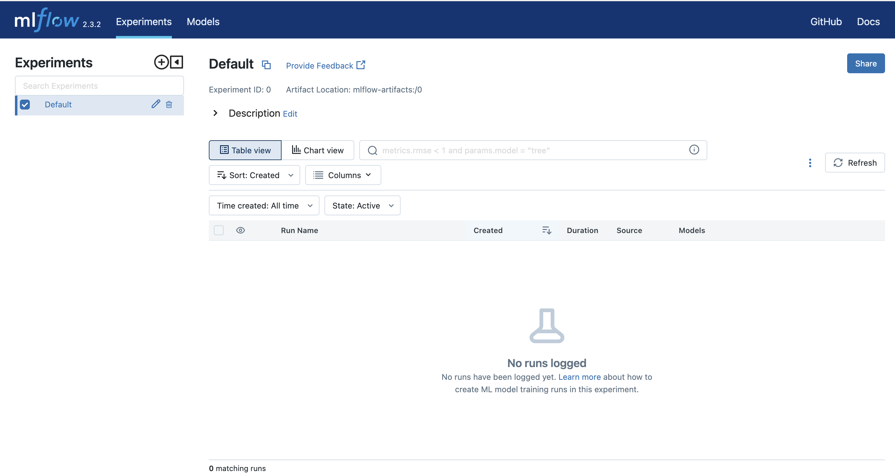
Note
If you face an Access to 127.0.0.1 was denied. You don’t have authorization to view this page. HTTP ERROR 403 error while accessing the MLflow UI, you can resolve it by clearing the browser cache and cookies.
One interesting thing to note here is that MLflow will create a new directory named mlruns in the current working directory. This directory will contain all the experiment runs and artifacts. This configuration of backend and artifact storage is called MLflow on localhost. There are other configurations available as well, which we will explore in another post.
def read_dataframe(filename: str) -> pd.DataFrame:""" Reads a Parquet file into a pandas DataFrame, performs data transformations, and returns the resulting DataFrame. Parameters: filename (str): The path to the Parquet file to be read. Returns: pandas.DataFrame: The processed DataFrame containing the data from the Parquet file. Raises: [Any exceptions raised by pandas.read_parquet()] Notes: - The function performs the following transformations on the DataFrame: - Converts 'lpep_dropoff_datetime' and 'lpep_pickup_datetime' columns to pandas datetime objects. - Computes the 'duration' column by subtracting 'lpep_pickup_datetime' from 'lpep_dropoff_datetime' and converting the result to minutes. - Filters the DataFrame to include rows where the 'duration' is between 1 and 60 minutes (inclusive). - Converts 'PULocationID' and 'DOLocationID' columns to string type. Example: filename = 'data.parquet' df = read_dataframe(filename) """# Read the Parquet file into a DataFrame df = pd.read_parquet(filename)# Convert 'lpep_dropoff_datetime' and 'lpep_pickup_datetime' columns to pandas datetime objects df.lpep_dropoff_datetime = pd.to_datetime(df.lpep_dropoff_datetime) df.lpep_pickup_datetime = pd.to_datetime(df.lpep_pickup_datetime)# Compute the 'duration' column by subtracting 'lpep_pickup_datetime' from 'lpep_dropoff_datetime' and converting to minutes df['duration'] = df.lpep_dropoff_datetime - df.lpep_pickup_datetime df.duration = df.duration.apply(lambda td: td.total_seconds() /60)# Filter the DataFrame to include rows where the 'duration' is between 1 and 60 minutes (inclusive) df = df[(df.duration >=1) & (df.duration <=60)]# Convert 'PULocationID' and 'DOLocationID' columns to string type categorical = ['PULocationID', 'DOLocationID'] df[categorical] = df[categorical].astype(str)# Return the processed DataFramereturn df
# Read the Parquet file for training data into a DataFramedf_train = read_dataframe('./data/green_tripdata_2022-01.parquet')# Read the Parquet file for validation data into a DataFramedf_val = read_dataframe('./data/green_tripdata_2022-02.parquet')# Read the Parquet file for testing data into a DataFramedf_test = read_dataframe('./data/green_tripdata_2022-03.parquet')
Prepare and Transform Dataset
def preprocess(df: pd.DataFrame, dv: DictVectorizer, fit_dv: bool=False):""" Preprocesses a pandas DataFrame by creating new features, transforming categorical features into a numerical format, and returning the transformed data along with the DictVectorizer. Parameters: df (pandas.DataFrame): The input DataFrame to be preprocessed. dv (sklearn.feature_extraction.DictVectorizer): The DictVectorizer instance to be used for transforming categorical features. fit_dv (bool, optional): Indicates whether to fit the DictVectorizer on the data. Defaults to False. Returns: tuple: A tuple containing the transformed feature matrix and the DictVectorizer instance. Notes: - The function assumes that the DataFrame contains the columns 'PULocationID' and 'DOLocationID'. - The function creates a new feature 'PU_DO' by concatenating 'PULocationID' and 'DOLocationID'. - The categorical feature 'PU_DO' and numerical feature 'trip_distance' are selected for transformation. - The function transforms the selected features into a dictionary representation and applies the DictVectorizer. - If fit_dv is True, the DictVectorizer is fitted on the data. Otherwise, the existing fitted DictVectorizer is used. Example: df = read_dataframe('data.parquet') dv = DictVectorizer() X, dv = preprocess(df, dv, fit_dv=True) """# Create a new feature 'PU_DO' by concatenating 'PULocationID' and 'DOLocationID' df['PU_DO'] = df['PULocationID'] +'_'+ df['DOLocationID']# Select categorical and numerical features for transformation categorical = ['PU_DO'] numerical = ['trip_distance']# Convert the selected features into a dictionary representation dicts = df[categorical + numerical].to_dict(orient='records')# Apply DictVectorizer for transforming categorical featuresif fit_dv:# Fit the DictVectorizer on the data X = dv.fit_transform(dicts)else:# Transform using the existing fitted DictVectorizer X = dv.transform(dicts)# Return the transformed feature matrix and DictVectorizerreturn X, dv
# Extract the target variabletarget ='duration'# Extract the target variable from the training, validation and testing datasetsy_train = df_train[target].valuesy_val = df_val[target].valuesy_test = df_test[target].values# Initialize a DictVectorizer for preprocessingdv = DictVectorizer()# Preprocess the training dataX_train, dv = preprocess(df_train, dv, fit_dv=True)# Preprocess the validation data using the fitted DictVectorizer from the training dataX_val, _ = preprocess(df_val, dv, fit_dv=False)# Preprocess the testing data using the fitted DictVectorizer from the training dataX_test, _ = preprocess(df_test, dv, fit_dv=False)
def dump_pickle(obj, filename: str):""" Pickles (serializes) an object and saves it to a file. Parameters: obj (Any): The object to be pickled. filename (str): The path and filename to save the pickled object. Returns: None Notes: - The function uses the 'pickle' module to serialize the object and save it to a file. - The file is opened in binary mode for writing using the "wb" mode. """withopen(filename, "wb") as f_out:return pickle.dump(obj, f_out)# Specify the destination path for saving filesdest_path ='./outputs'# Create dest_path folder unless it already existsos.makedirs(dest_path, exist_ok=True)# Save DictVectorizer object as a pickle filedump_pickle(dv, os.path.join(dest_path, "dv.pkl"))
Train Linear Regression Model with MLflow
In mlflow you create one experiment and all the runs are stored under that experiment. You can create a new experiment using the following command:
# Create a new experimentmlflow.set_experiment("nyc-taxi-experiment")
If you check your MLflow UI, you’ll notice a new experiment named ny-taxi-experiment has been created under Experiments section. All the runs and artifacts will be stored under this experiment.
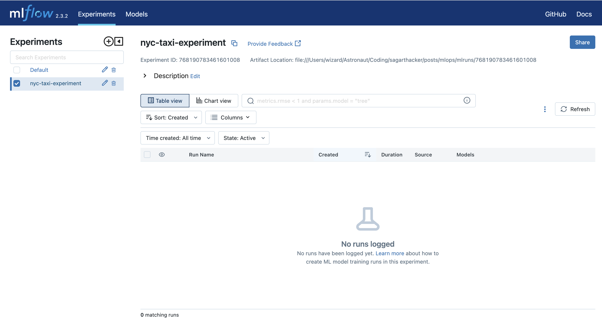
# Specify the destination path for saving model filesmodel_path ="./outputs/models"# Start an MLflow runwith mlflow.start_run():# Set a tag for the developer mlflow.set_tag("developer", "Sagar")# Initialize and train a LinearRegression model lr = LinearRegression() lr.fit(X_train, y_train)# Make predictions on the validation data yhat = lr.predict(X_val)# Calculate the root mean squared error (RMSE) rmse = mean_squared_error(y_val, yhat, squared=False)# Log the RMSE metric to MLflow mlflow.log_metric("rmse", rmse)# Create dest_path folder unless it already exists os.makedirs(model_path, exist_ok=True)# Save the trained model as a pickle file dump_pickle(lr, os.path.join(model_path, "lin_reg.pkl"))# Log the trained model as an artifact to MLflow mlflow.log_artifact(local_path=f"{model_path}/lin_reg.pkl", artifact_path="models_pickle")
After running an experiment run, go to your MLflow UI and there you can see an entry of the run. If you click on the run you have observer other details associated with the run such as Metrics, Tags, Artifacts. In the Artifacts section you can see the model_pickle folder which contains the model file. You can download the model file from there and use it for prediction.
Tip
If you don’t see your run on the UI, you can refresh using Refresh button on the right side of the page above the table.
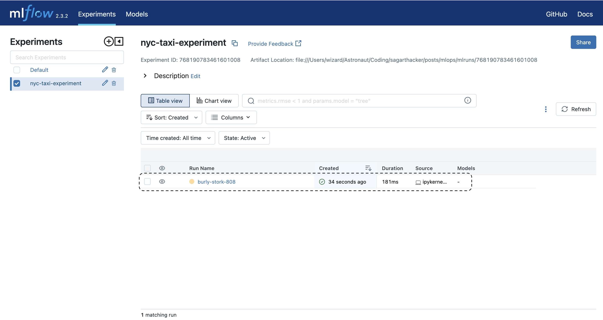
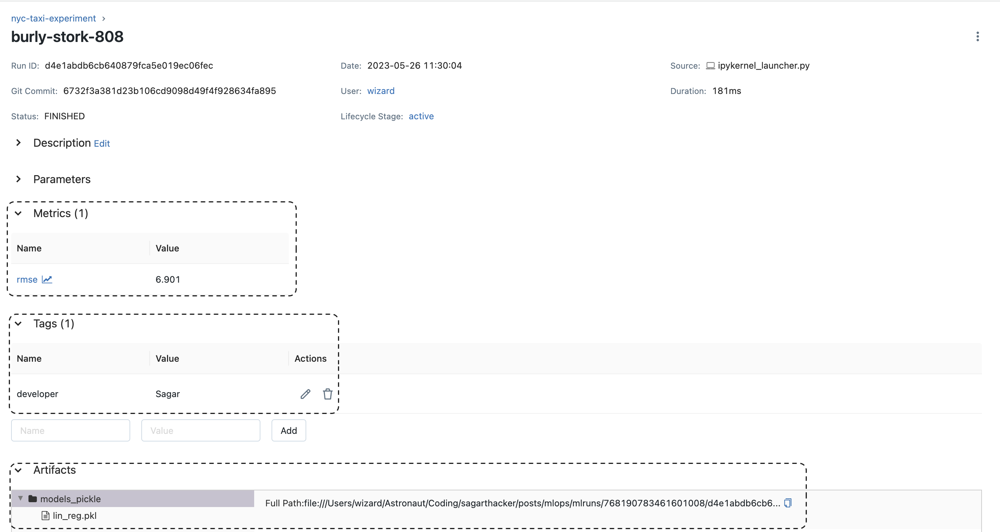
Voila 🎉! You have successfully trained a Linear Regression model and tracked the experiment using MLflow. You can find the complete code.
Traing a Lasso Regression Model
# Specify the destination path for saving model filesmodel_path ="./outputs/models"# Start an MLflow runwith mlflow.start_run():# Set a tag for the developer mlflow.set_tag("developer", "Sagar")# Set the value for the regularization parameter (alpha) alpha =0.1# Log the regularization parameter (alpha) as a parameter in MLflow mlflow.log_param("alpha", alpha)# Initialize and train a Lasso Regression model lasso = Lasso(alpha=alpha) lasso.fit(X_train, y_train)# Make predictions on the validation data yhat = lasso.predict(X_val)# Calculate the root mean squared error (RMSE) rmse = mean_squared_error(y_val, yhat, squared=False)# Log the RMSE metric to MLflow mlflow.log_metric("rmse", rmse)# Create the destination folder for saving model files if it doesn't exist os.makedirs(model_path, exist_ok=True)# Save the trained Lasso Regression model as a pickle file dump_pickle(lr, os.path.join(model_path, "lasso_reg.pkl"))# Log the trained model as an artifact to MLflow mlflow.log_artifact(local_path=f"{model_path}/lasso_reg.pkl", artifact_path="models_pickle")
Similar to Linear Regression, we can train a Lasso Regression model and track the experiment using MLflow.
Hyperparameter Tuning
Tools such as MLflow shine when it comes to hyperparameter tuning and model selection. Let’s see how we can leverage MLflow to tune the hyperparameters of our model.
We’ll setup a new experiment for hyperparameter tuning and use MLflow to track the results. We’ll use Hyperopt and Optuna libraries for hyperparameter tuning.
# Create a new experimentmlflow.set_experiment("random-forest-hyperopt")
def run_optimization(num_trials: int=10):""" Runs the optimization process using Optuna library to find the optimal hyperparameters for RandomForestRegressor. Parameters: num_trials (int): The number of optimization trials to perform. Default is 10. Returns: None Notes: - The function defines an objective function for Optuna to minimize the root mean squared error (RMSE). - The objective function samples hyperparameters, trains a RandomForestRegressor model with those hyperparameters, evaluates the model on the validation data, and logs the RMSE metric to MLflow. - Optuna performs the optimization process by searching for the set of hyperparameters that minimizes the RMSE. """def objective(trial):""" Objective function for Optuna optimization. Parameters: trial (optuna.Trial): A trial object representing a single optimization trial. Returns: float: The value of the objective function (RMSE). Notes: - The objective function samples hyperparameters from the defined search space. - It initializes and trains a RandomForestRegressor model with the sampled hyperparameters. - The model is evaluated on the validation data, and the RMSE is calculated. - The RMSE and the sampled hyperparameters are logged to MLflow. """ params = {'n_estimators': trial.suggest_int('n_estimators', 10, 50, 1),'max_depth': trial.suggest_int('max_depth', 1, 20, 1),'min_samples_split': trial.suggest_int('min_samples_split', 2, 10, 1),'min_samples_leaf': trial.suggest_int('min_samples_leaf', 1, 4, 1),'random_state': 42,'n_jobs': -1 }# Start a new MLflow run for each trialwith mlflow.start_run():# Set a tag for the model type mlflow.set_tag("model", "RandomForestRegressor")# Log the sampled hyperparameters to MLflow mlflow.log_params(params)# Initialize a RandomForestRegressor model with the sampled hyperparameters rf = RandomForestRegressor(**params)# Train the model on the training data rf.fit(X_train, y_train)# Make predictions on the validation data y_pred = rf.predict(X_val)# Calculate the root mean squared error (RMSE) rmse = mean_squared_error(y_val, y_pred, squared=False)# Log the RMSE metric to MLflow mlflow.log_metric("rmse", rmse)return rmse# Use the Tree-structured Parzen Estimator (TPE) sampler for efficient hyperparameter search sampler = TPESampler(seed=42)# Create an Optuna study with the defined objective function and search direction study = optuna.create_study(direction="minimize", sampler=sampler)# Run the optimization process with the specified number of trials study.optimize(objective, n_trials=num_trials)run_optimization()
[I 2023-05-26 12:23:03,233] A new study created in memory with name: no-name-19f4f970-eafc-402c-89b3-2aa461ab17fc
[I 2023-05-26 12:23:04,744] Trial 0 finished with value: 6.012747224033297 and parameters: {'n_estimators': 25, 'max_depth': 20, 'min_samples_split': 8, 'min_samples_leaf': 3}. Best is trial 0 with value: 6.012747224033297.
[I 2023-05-26 12:23:04,872] Trial 1 finished with value: 6.249433998787504 and parameters: {'n_estimators': 16, 'max_depth': 4, 'min_samples_split': 2, 'min_samples_leaf': 4}. Best is trial 0 with value: 6.012747224033297.
[I 2023-05-26 12:23:06,223] Trial 2 finished with value: 6.039045655830305 and parameters: {'n_estimators': 34, 'max_depth': 15, 'min_samples_split': 2, 'min_samples_leaf': 4}. Best is trial 0 with value: 6.012747224033297.
[I 2023-05-26 12:23:06,636] Trial 3 finished with value: 6.179387143797025 and parameters: {'n_estimators': 44, 'max_depth': 5, 'min_samples_split': 3, 'min_samples_leaf': 1}. Best is trial 0 with value: 6.012747224033297.
[I 2023-05-26 12:23:07,140] Trial 4 finished with value: 6.075505898039151 and parameters: {'n_estimators': 22, 'max_depth': 11, 'min_samples_split': 5, 'min_samples_leaf': 2}. Best is trial 0 with value: 6.012747224033297.
[I 2023-05-26 12:23:07,316] Trial 5 finished with value: 6.441117537172997 and parameters: {'n_estimators': 35, 'max_depth': 3, 'min_samples_split': 4, 'min_samples_leaf': 2}. Best is trial 0 with value: 6.012747224033297.
[I 2023-05-26 12:23:08,432] Trial 6 finished with value: 6.0285791267371165 and parameters: {'n_estimators': 28, 'max_depth': 16, 'min_samples_split': 3, 'min_samples_leaf': 3}. Best is trial 0 with value: 6.012747224033297.
[I 2023-05-26 12:23:08,532] Trial 7 finished with value: 7.881244954282265 and parameters: {'n_estimators': 34, 'max_depth': 1, 'min_samples_split': 7, 'min_samples_leaf': 1}. Best is trial 0 with value: 6.012747224033297.
[I 2023-05-26 12:23:09,146] Trial 8 finished with value: 6.025608014492215 and parameters: {'n_estimators': 12, 'max_depth': 19, 'min_samples_split': 10, 'min_samples_leaf': 4}. Best is trial 0 with value: 6.012747224033297.
[I 2023-05-26 12:23:09,239] Trial 9 finished with value: 7.071070856187059 and parameters: {'n_estimators': 22, 'max_depth': 2, 'min_samples_split': 8, 'min_samples_leaf': 2}. Best is trial 0 with value: 6.012747224033297.
After running the experiment, you can see the results in the MLflow UI. You can also select multiple runs and compare them using the Compare button on the top left corner of the table.
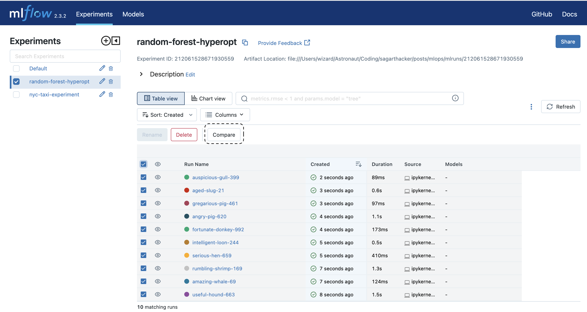
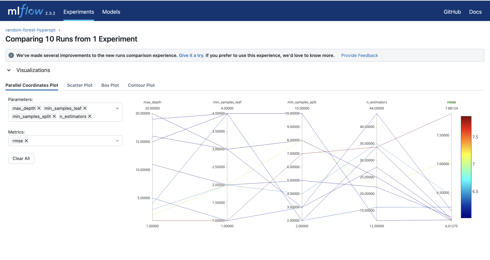
One of the most interesting plot in the MLflow UI is the Parallel Coordinates Plot. It allows you to visualize the relationship between the hyperparameters and the metrics.
Scatter plot allows you to visualize the relationship between a single hyperparameter and the metric.
Box Plot are similar to scatter plot in terms of visualization.
Contour Plot allows you to visualize the relationship between two hyperparameters and the metric.
Apart from the visualizations, they also provide more information of the Run Duration, Parameters, Metrics and Tags associated with the run in a tabular format to compare the runs.
Model Registry
MLflow Model Registry is a centralized model store, set of APIs, and UI, to collaboratively manage the full lifecycle of an MLflow Model. It provides model lineage (which MLflow Experiment and Run produced the model), model versioning, stage transitions (for example from staging to production), annotations, and other functionality to track the model lifecycle.
From our example above for hyperparameter tuning, we can register the best model which performs well on the test dataset.
To interact with an MLflow Tracking Server and an MLflow Registry Server, we utilize the Client class. It allows us to create and manage experiments and runs in the Tracking Server, as well as create and manage registered models and model versions in the Registry Server. The mlflow.client module offers a Python interface for performing CRUD operations on MLflow Experiments, Runs, Model Versions, and Registered Models. It serves as a lower-level API that directly corresponds to MLflow’s REST API calls.
More information about the MLflow Client can be found here.
# Hyperparameter optimization experiment nameHPO_EXPERIMENT_NAME ="random-forest-hyperopt"# Best model experiment nameEXPERIMENT_NAME ="random-forest-best-models"# Create a new experiment for the best modelsmlflow.set_experiment(EXPERIMENT_NAME)
# Automatically log parameters and metricsmlflow.sklearn.autolog()
def train_and_log_model(params):""" Trains a RandomForestRegressor model with the given hyperparameters and logs evaluation metrics to MLflow. Parameters: params (dict): Dictionary of hyperparameters for RandomForestRegressor. Returns: None Notes: - The function starts an MLflow run to track the model training and evaluation process. - It converts certain hyperparameters to integers. - A RandomForestRegressor model is initialized with the provided hyperparameters. - The model is trained on the training data. - The trained model is evaluated on the validation and test sets, and the root mean squared error (RMSE) is calculated and logged to MLflow as evaluation metrics. """with mlflow.start_run():# Convert specific hyperparameters to integersfor param in RF_PARAMS: params[param] =int(params[param])# Initialize a RandomForestRegressor model with the given hyperparameters rf = RandomForestRegressor(**params)# Train the model on the training data rf.fit(X_train, y_train)# Evaluate the trained model on the validation set val_rmse = mean_squared_error(y_val, rf.predict(X_val), squared=False)# Log the validation RMSE metric to MLflow mlflow.log_metric("val_rmse", val_rmse)# Evaluate the trained model on the test set test_rmse = mean_squared_error(y_test, rf.predict(X_test), squared=False)# Log the test RMSE metric to MLflow mlflow.log_metric("test_rmse", test_rmse)
def run_register_model(top_n: int):""" Runs the process to register the best model based on the top_n model runs with the lowest test RMSE. Parameters: top_n (int): The number of top model runs to consider. Returns: None Notes: - The function interacts with the MLflow tracking server to retrieve and register models. - It retrieves the top_n model runs based on the lowest validation RMSE. - For each run, it trains a model using the hyperparameters from the run and logs evaluation metrics to MLflow. - After evaluating the models, it selects the one with the lowest test RMSE. - The selected model is registered with a specified name in MLflow. """# Connect to the MLflow tracking server client = MlflowClient()# Retrieve the top_n model runs and log the models experiment = client.get_experiment_by_name(HPO_EXPERIMENT_NAME)# Retrieve the top_n model runs based on the lowest validation RMSE runs = client.search_runs( experiment_ids=experiment.experiment_id, run_view_type=ViewType.ACTIVE_ONLY, max_results=top_n, order_by=["metrics.rmse ASC"] )# Train and log the model for each runfor run in runs:# Train and log the model based on the hyperparameters from the run train_and_log_model(params=run.data.params)# Select the model with the lowest test RMSE experiment = client.get_experiment_by_name(EXPERIMENT_NAME)# Retrieve model runs based on the lowest test RMSE, and select the first run (with the lowest test RMSE) best_run = client.search_runs( experiment_ids=experiment.experiment_id, run_view_type=ViewType.ACTIVE_ONLY, order_by=["metrics.test_rmse ASC"] )[0]# Register the best model model_uri =f"runs:/{best_run.info.run_id}/model"# Register the best model with a specified name mlflow.register_model( model_uri=model_uri, name="random-forest-best-model" )
# The number of top model runs to considertop_n =5run_register_model(top_n=top_n)
2023/05/26 13:27:30 WARNING mlflow.utils.autologging_utils: MLflow autologging encountered a warning: "/Users/wizard/Astronaut/Dev/MLOps/week2/venv/lib/python3.9/site-packages/_distutils_hack/__init__.py:33: UserWarning: Setuptools is replacing distutils."
Successfully registered model 'random-forest-best-model'.
2023/05/26 13:27:40 INFO mlflow.tracking._model_registry.client: Waiting up to 300 seconds for model version to finish creation. Model name: random-forest-best-model, version 1
Created version '1' of model 'random-forest-best-model'.
By following the mentioned steps, a new experiment called random-forest-best-models will be created, displaying five runs. You may observe that each run provides additional information. This is due to the utilization of MLflow’s autologging feature.
Autologging captures more parameters, metrics, and tags, and also saves the model as an artifact along with environment details. This feature proves particularly beneficial when you aim to reproduce the results. You have the option to download the model and environment details, enabling you to replicate the outcomes accurately.
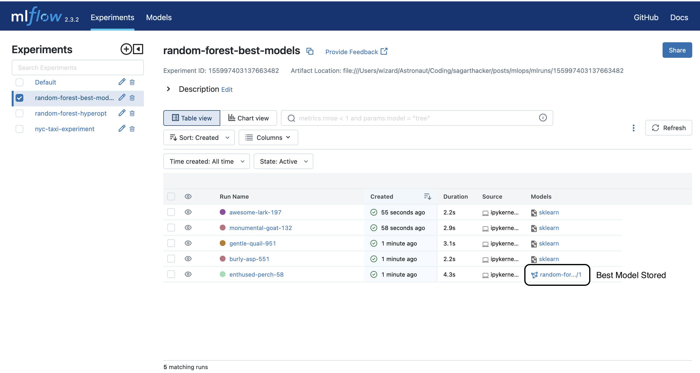
Click on the run with the best model stored and access additional details about the run.
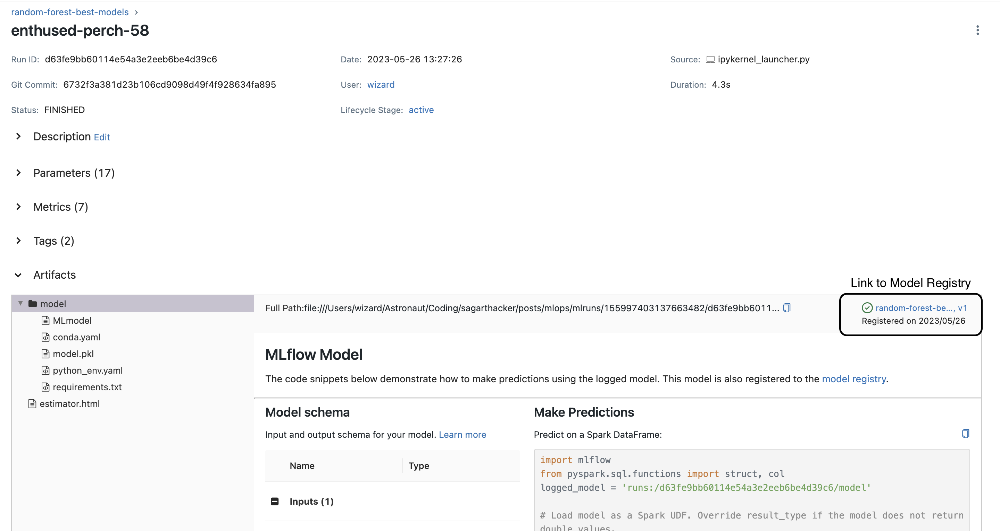
By clicking on the link to model registry in the above image, you will be redirected to the model registry page.
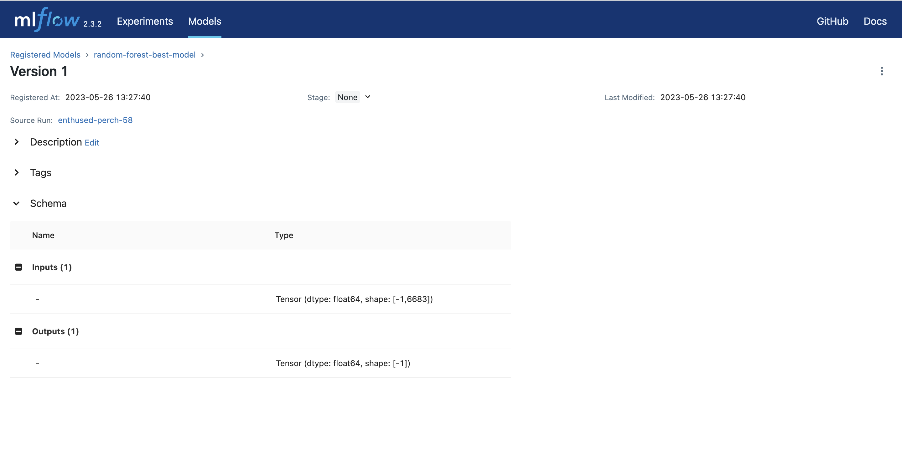
Another way to access the model registry is by clicking on the model registry tab on the left side of the MLflow UI. You will be able to see the model registry page with the best model registered.
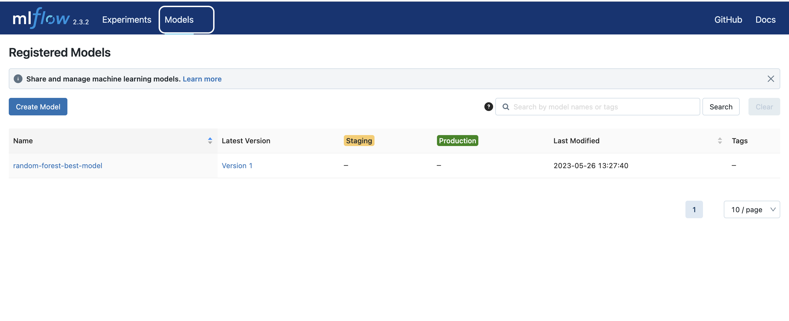
You also have an option to change the stage of the model to Staging, Production, or Archived. You can do this by clicking on the stage transition button on the right side of the model name.
In the MLflow ecosystem, the responsibility of determining which models are ready for production lies with the Data Scientist. Once a model is registered in the model registry, the Deployment Engineer can review important details such as the model’s parameters, size, and performance. Based on this information, they can make informed decisions on moving the model across different stages.
It’s important to note that the model registry itself does not handle the deployment of models. It serves as a centralized repository to list the models that are considered production-ready, with stages acting as labels. To complete the deployment process, it is recommended to complement the model registry with a CI/CD pipeline specifically designed for deploying models. This pipeline would handle the actual deployment process, incorporating the production-ready models identified in the model registry.
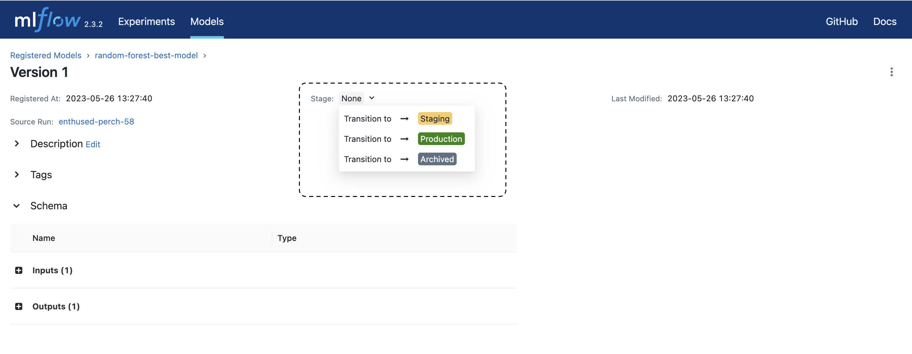
MLflow Limitations
MLflow, while a powerful tool for experiment tracking and model management, has certain limitations to consider.
Authentication & Users: It lacks built-in authentication and user management capabilities, making it less suitable for environments requiring strict access control.
Data versioning: MLflow does not provide a native solution for data versioning, requiring alternative approaches.
Model/Data Monitoring & Alerting: Moreover, for model and data monitoring, as well as alerting, other specialized tools may be more appropriate.
Congratulation 🎉! You have successfully trained ML model and tracked the experiment using MLflow.
Thank you for reading and I hope you found this notebook helpful. Upvote if you liked it, comment if you loved it. Hope to see you guys in the next one. Peace!